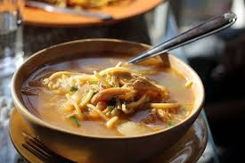

THUKPA-RECIPE

INGREDIENTS
- Noodles (preferably flat or egg noodles): 200 grams
- Chicken or vegetable broth: 4 cups
- Boneless chicken or tofu: 250 grams, diced
- Chopped onion: 1 medium-sized
- Chopped garlic: 2 cloves
- Chopped ginger: 1-inch piece
- Chopped green chilies: 2
- Sliced carrots: 1 cup
- Sliced cabbage: 1 cup
- Soy sauce: 2 tablespoons
- Salt and pepper to taste
- Chopped cilantro for garnish
Method
- Boil the noodles separately according to package instructions, then drain and set aside.
- In a pot, heat some oil. Add chopped onion, garlic, ginger, and green chilies. Sauté until aromatic.
- Add diced chicken/tofu and stir until it's lightly browned.
- Pour in the chicken or vegetable broth. Bring it to a simmer.
- Add sliced carrots and cabbage. Cook until vegetables are tender.
- Season with soy sauce, salt, and pepper according to taste.
- In serving bowls, place a portion of boiled noodles
- Ladle the hot soup over the noodles and garnish with chopped cilantro.
- Serve hot and enjoy this comforting Nepali noodle soup.
Thukpa is Ready!!!